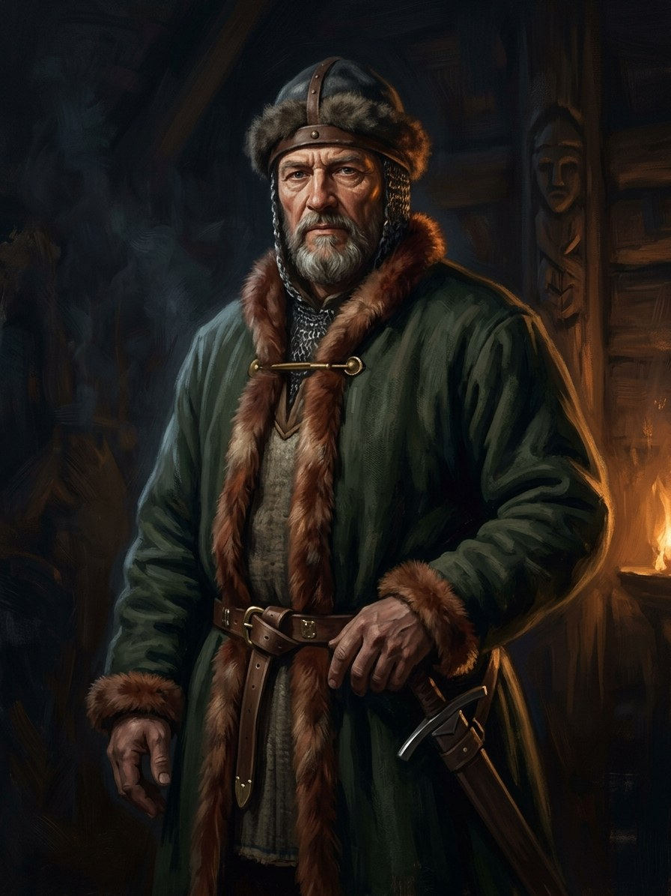

Algirdas¶
Summary¶
Algirdas (c. 1296 - May 1377) is the elder of the two brothers who shared the Grand Duchy for thirty-two years: he held Vilnius and looked east, while Kęstutis held Trakai and looked west. When the saga’s readers meet him he is already ash. He is the dead brother of Book I, the man whose will Kęstutis keeps to his own death, and the hesitant oath-giver of the 1345 Silent Pact. In the prequel (Book VI) he is a patient, silent strategist who never says where an army is marching, and who gives the old gods the flames while his brother gives the blood. His want is the east: Kyiv, Podolia, Moscow. What he leaves behind is a divided house, because the sons of his first marriage were passed over for Jogaila.
Algirdas

Algirdas · character¶
Tipas |
veikėjas |
Metai |
c. 1296–1377 |
Status |
Istoriniai duomenys |
Pastaba |
Grand Duke of Lithuania (1345–1377), co-ruler with Kęstutis who expanded the realm deep into Rus‘. |
Appearance & tells¶
Book VI gives him few features and many habits. In his prime he is known for a calm face that betrays nothing; Jaunutis dreads that face on the morning he is deposed (ch. 3). His great tell is secrecy: he does not tell his captains where the army is going, even when it is already marching (ch. 15, ch. 20, the Blue Waters campaign). In ch. 28 he lies dying with a grey beard „like ashes“ and hands thin as grass roots, a body that has shrunk to eyes and bones. At his pyre in ch. 29 a strip of black cloth shows at the edge of the fire, the sign of the Orthodox monk’s vows that Ruthenian sources claim he took at the end; the Krivis and an Orthodox priest stand on either side of the flames, and the saga lets both stories be true.
Want · Need · Lie · Truth¶
Want (external) |
The east: Ruthenian lands, Kyiv, a steppe frontier that makes Lithuania safe from the Order by making it larger. |
Need (internal) |
To tell his brother, and the Pact’s gods, the whole truth about what he is paying and who will pay it. |
Lie they believe |
That an empire built eastward can be held by silence and by a younger son’s obedience. |
Truth they learn (or refuse) |
He learns it only at the end: he asks Kęstutis to guard Jogaila, the one promise that will be kept and the one that will kill its keeper (Book VI ch. 28). |
Arc by book¶
Book VI (1341-1377): deposes Jaunutis with Kęstutis in 1345 (ch. 3), hesitates while Kęstutis speaks the Pact’s unspoken third clause aloud (ch. 4), and never forgives him; marries Uliana of Tver (1350, ch. 12); wins at Blue Waters (1362, ch. 20), where the Steppe-Hunger first notices Lithuania; marches on Moscow (1368, 1370, 1372; ch. 22, 25); names Jogaila his heir and asks Kęstutis to protect him (ch. 28); is burned in May 1377 as the Pact weakens (ch. 29).
Book I: dead from the first page; remembered as the brother whose heir Kęstutis spared in 1381 (ch. 1, 2, 8).
Book II: his disinherited sons Andrius and Dmitrijus die at the Vorskla (1399); his eastern lands are Skirgaila’s and Vytautas’s to take.
Book V: Žiežirba sees the oath night in the cracked pebble and learns that Algirdas hesitated (ch. 5).
Power & magic¶
Tier 0: no gift of his own, in the saga or in the record. His standing in the magic is structural. He is one of the two oath-takers of the Silent Pact (1345): he gives the sacred flames, Kęstutis the blood. He keeps the Vilnius wolf packs at the Šventaragis flame, which is the root of the 1382 schism among the Iron Wolves. His death in 1377 is the first weakening of the Pact; Kęstutis’s kin-slaying in 1382 and Jogaila’s baptism (1386-87) finish it. The Shadow-Seller watches his court only through small shapes, a black dog and a clerk with a ledger, and has no stones or mask yet.
Record vs saga¶
[Historical record]: Grand Duke of Lithuania 1345-77 (born c. 1296, died May 1377), ruling from Vilnius in a diarchy with his brother Kęstutis after they deposed their brother Jaunutis in 1345. Through his first wife Maria of Vitebsk (m. c. 1318) he held Vitebsk; in 1350 he married Uliana of Tver, and in 1377 her son Jogaila was preferred over Maria’s elder sons. He defeated three Tatar commanders at Blue Waters (1362; dating debated) and drew Kyiv and Podolia into the realm, and besieged Moscow in 1368, 1370 and 1372. He was cremated according to pagan custom; A late monastic-conversion tradition is unreliable as biography; see Baronas. See VLE and Wikipedia.
[The saga’s invention]: The Silent Pact of 1345 and his hesitation at its third clause (Book VI ch. 4; Book V ch. 5); the black dog and the ledger clerk at his court (Book VI ch. 8, 27); the double funeral with Krivis and monk side by side (ch. 29). The novel deliberately combines the weak conversion tradition with cremation and relocates the pyre to Vilnius. These are disclosed alterations, alongside the invented private deathbed conversations.
Tarimas¶
al-GIR-das (/ɐlʲˈɡʲɪrdɐs/), English respelling ahl-GIHR-dahs; stress on the second syllable. Genitive Algirdo, dative Algirdui, accusative Algirdą.
Appearances¶
Book VI (Šventasis Miškas): the dominant figure of the prequel after Kęstutis: ch. 1, 3, 4, 6, 7, 8, 12, 15, 20 (POV), 22, 24, 25 (POV), 26, 28, 29, 30 and the afterword. Book I: ch. 1, 2, 6, 8, 10 (remembered). Book II: ch. 12, 13, 22, 28 and the afterword (as father of Andrius, Dmitrijus, Skirgaila, Švitrigaila). Book III: ch. 2, 5, 8. Book IV: ch. 12, 24. Book V: ch. 3, 5 (the oath flashback), 9, 11, 15, 19, 26. Book VI ch. 15 and 29 set his heir-naming and death in spring 1377; Book I treats the date as three years and some months before Jogaila’s accession scenes.
Ryšiai
Bound by: Tylioji Sutartis (Silent Pact)
Child of: Gediminas
Member of: Algirdaičiai (Algirdas’s line)
Parent of: Jogaila · Kaributas · Skirgaila · Švitrigaila
Rules: Grand Duchy of Lithuania (1345–1377)
Sibling: Kęstutis
Spouse: Uliana of Tver (Julijona Tverietė), Algirdas’s second wife (1349–1377)
Took part in: Algirdas dies; cremated · Silent Pact sworn
Chronologija¶
Year |
Event |
Book |
|---|---|---|
1345 |
VI · Šventasis Miškas (priešistorė) |
|
1377 |
VI · Šventasis Miškas (priešistorė) |
Sąsajos¶
graph LR
algirdaiciai["Algirdaičiai (Algirdas's line)"]
algirdas["Algirdas"]
ev_algirdas_dies["Algirdas dies; cremated"]
ev_pact_sworn["Silent Pact sworn"]
gdl["Grand Duchy of Lithuania"]
gediminas["Gediminas"]
jogaila["Jogaila"]
kaributas["Kaributas"]
kestutis["Kęstutis"]
silent_pact["Tylioji Sutartis (Silent Pact)"]
skirgaila["Skirgaila"]
svitrigaila["Švitrigaila"]
uliana_tver["Uliana of Tver (Julijona Tverietė), Algirdas's second wife"]
algirdas -->|Sibling| kestutis
algirdas -->|Parent of| jogaila
algirdas -->|Parent of| skirgaila
algirdas -->|Parent of| svitrigaila
algirdas -->|Parent of| kaributas
algirdas -->|Member of| algirdaiciai
algirdas -->|Rules| gdl
algirdas -->|Took part in| ev_pact_sworn
algirdas -->|Took part in| ev_algirdas_dies
algirdas -->|Spouse| uliana_tver
gediminas -->|Parent of| algirdas
silent_pact -->|Binds| algirdas
style algirdas stroke-width:3px